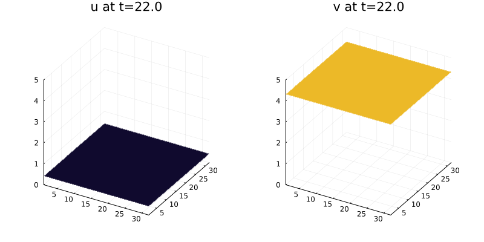

Performance Optimizing and Parallelizing Semilinear PDE Solvers (I)
Part 1: Implementing the BRUSS PDE System as ODEs
using DifferentialEquations, Sundials, Plots
using ADTypes: AutoFiniteDiff
using OrdinaryDiffEqSDIRK: KenCarp4, KenCarp47, TRBDF2
# initial condition
function init_brusselator_2d(xyd)
N = length(xyd)
u = zeros(N, N, 2)
for I in CartesianIndices((N, N))
x = xyd[I[1]]
y = xyd[I[2]]
u[I,1] = 22*(y*(1-y))^(3/2)
u[I,2] = 27*(x*(1-x))^(3/2)
end
u
end
N = 32
xyd_brusselator = range(0,stop=1,length=N)
u0 = vec(init_brusselator_2d(xyd_brusselator))
tspan = (0, 22.)
p = (3.4, 1., 10., xyd_brusselator)
brusselator_f(x, y, t) = ifelse((((x-0.3)^2 + (y-0.6)^2) <= 0.1^2) &&
(t >= 1.1), 5., 0.)
using LinearAlgebra, SparseArrays
du = ones(N-1)
D2 = spdiagm(-1 => du, 0=>fill(-2.0, N), 1 => du)
D2[1, N] = D2[N, 1] = 1
D2 = 1/step(xyd_brusselator)^2*D2
tmp = Matrix{Float64}(undef, N, N)
function brusselator_2d_op(du, u, (D2, tmp, p), t)
A, B, α, xyd = p
dx = step(xyd)
N = length(xyd)
α = α/dx^2
du = reshape(du, N, N, 2)
u = reshape(u, N, N, 2)
@views for i in axes(u, 3)
ui = u[:, :, i]
dui = du[:, :, i]
mul!(tmp, D2, ui)
mul!(dui, ui, D2')
dui .+= tmp
end
@inbounds begin
for I in CartesianIndices((N, N))
x = xyd[I[1]]
y = xyd[I[2]]
i = I[1]
j = I[2]
du[i,j,1] = α*du[i,j,1] + B + u[i,j,1]^2*u[i,j,2] - (A + 1)*u[i,j,1] + brusselator_f(x, y, t)
du[i,j,2] = α*du[i,j,2] + A*u[i,j,1] - u[i,j,1]^2*u[i,j,2]
end
end
nothing
end
prob1 = ODEProblem(brusselator_2d_op, u0, tspan, (D2, tmp, p))
sol1 = solve(prob1, TRBDF2(autodiff=AutoFiniteDiff()))
# Benchmarking (run locally for accurate timings):
# using BenchmarkTools
# @btime solve(prob1, TRBDF2(autodiff=AutoFiniteDiff()));Visualizing the solution (works best in a terminal):
# Create a simpler static plot instead of GIF for CI efficiency
off = N^2
solt = sol1(sol1.t[end])
plt1 = surface(reshape(solt[1:off], N, N), zlims=(0, 5), leg=false, title="u at t=$(sol1.t[end])")
plt2 = surface(reshape(solt[off+1:end], N, N), zlims=(0, 5), leg=false, title="v at t=$(sol1.t[end])")
plot(plt1, plt2, layout=(1,2), size=(800, 400))
Part 2: Optimizing the BRUSS Code
function brusselator_2d_loop(du, u, p, t)
A, B, α, xyd = p
dx = step(xyd)
N = length(xyd)
α = α/dx^2
limit = a -> let N=N
a == N+1 ? 1 :
a == 0 ? N :
a
end
II = LinearIndices((N, N, 2))
@inbounds begin
for I in CartesianIndices((N, N))
x = xyd[I[1]]
y = xyd[I[2]]
i = I[1]
j = I[2]
ip1 = limit(i+1)
im1 = limit(i-1)
jp1 = limit(j+1)
jm1 = limit(j-1)
ii1 = II[i,j,1]
ii2 = II[i,j,2]
du[II[i,j,1]] = α*(u[II[im1,j,1]] + u[II[ip1,j,1]] + u[II[i,jp1,1]] + u[II[i,jm1,1]] - 4u[ii1]) +
B + u[ii1]^2*u[ii2] - (A + 1)*u[ii1] + brusselator_f(x, y, t)
du[II[i,j,2]] = α*(u[II[im1,j,2]] + u[II[ip1,j,2]] + u[II[i,jp1,2]] + u[II[i,jm1,2]] - 4u[II[i,j,2]]) +
A*u[ii1] - u[ii1]^2*u[ii2]
end
end
nothing
end
prob2 = ODEProblem(brusselator_2d_loop, u0, tspan, p)
sol2 = solve(prob2, TRBDF2())
# Benchmarking: @btime solve(prob2, TRBDF2());sol2b = solve(prob2, CVODE_BDF())
# Benchmarking: @btime solve(prob2, CVODE_BDF());Part 3: Exploiting Jacobian Sparsity with Automatic Sparsity Detection
We use ADTypes.jacobian_sparsity with SparseConnectivityTracer to automatically detect the sparsity pattern. This approach traces through the function to identify which matrix elements are accessed, returning a sparse pattern.
import SparseConnectivityTracer, ADTypes
detector = SparseConnectivityTracer.TracerSparsityDetector()
du0 = copy(u0)
jac_sparsity = ADTypes.jacobian_sparsity(
(du, u) -> brusselator_2d_loop(du, u, p, 0.0), du0, u0, detector)
f = ODEFunction(brusselator_2d_loop; jac_prototype = float.(jac_sparsity))
prob3 = ODEProblem(f, u0, tspan, p)
sol3 = solve(prob3, TRBDF2())
# Benchmarking: @btime solve(prob3, TRBDF2());(Optional) Part 4: Structured Jacobians
(Optional) Part 5: Automatic Symbolicification and Analytical Jacobian
Part 6: Utilizing Preconditioned-GMRES Linear Solvers
We use KrylovJL_GMRES with an incomplete LU factorization as a preconditioner. The precs callback receives the linear operator and problem parameters and returns left and right preconditioners.
import IncompleteLU, LinearSolve
function incompletelu(A, p)
Pl = IncompleteLU.ilu(convert(AbstractMatrix, A), τ = 50.0)
Pl, I
end
# Required for IncompleteLU to work with LinearSolve
Base.eltype(::IncompleteLU.ILUFactorization{Tv, Ti}) where {Tv, Ti} = Tv
# Using sparse Jacobian with GMRES and ILU preconditioner
sol6 = solve(prob3,
KenCarp47(linsolve = LinearSolve.KrylovJL_GMRES(precs = incompletelu),
concrete_jac = true); save_everystep = false)
# Benchmarking: @btime solve(prob3, KenCarp47(...); save_everystep = false);For comparison, Sundials CVODE_BDF with GMRES:
sol_cvodebdf = solve(prob2, CVODE_BDF(linear_solver=:GMRES))
# Benchmarking: @btime solve(prob2, CVODE_BDF(linear_solver=:GMRES));Part 7: Exploring IMEX and Exponential Integrator Techniques (E)
function laplacian2d(du, u, p, t)
A, B, α, xyd = p
dx = step(xyd)
N = length(xyd)
du = reshape(du, N, N, 2)
u = reshape(u, N, N, 2)
@inbounds begin
α = α/dx^2
limit = a -> let N=N
a == N+1 ? 1 :
a == 0 ? N :
a
end
for I in CartesianIndices((N, N))
x = xyd[I[1]]
y = xyd[I[2]]
i = I[1]
j = I[2]
ip1 = limit(i+1)
im1 = limit(i-1)
jp1 = limit(j+1)
jm1 = limit(j-1)
du[i,j,1] = α*(u[im1,j,1] + u[ip1,j,1] + u[i,jp1,1] + u[i,jm1,1] - 4u[i,j,1])
du[i,j,2] = α*(u[im1,j,2] + u[ip1,j,2] + u[i,jp1,2] + u[i,jm1,2] - 4u[i,j,2])
end
end
nothing
end
function brusselator_reaction(du, u, p, t)
A, B, α, xyd = p
dx = step(xyd)
N = length(xyd)
du = reshape(du, N, N, 2)
u = reshape(u, N, N, 2)
@inbounds begin
for I in CartesianIndices((N, N))
x = xyd[I[1]]
y = xyd[I[2]]
i = I[1]
j = I[2]
du[i,j,1] = B + u[i,j,1]^2*u[i,j,2] - (A + 1)*u[i,j,1] + brusselator_f(x, y, t)
du[i,j,2] = A*u[i,j,1] - u[i,j,1]^2*u[i,j,2]
end
end
nothing
end
prob7 = SplitODEProblem(laplacian2d, brusselator_reaction, u0, tspan, p)
sol7 = solve(prob7, KenCarp4())
# Benchmarking: @btime solve(prob7, KenCarp4());M = MatrixFreeOperator((du,u,p)->laplacian2d(du, u, p, 0), (p,), size=(2*N^2, 2*N^2), opnorm=1000)
prob7_2 = SplitODEProblem(M, brusselator_reaction, u0, tspan, p)
@btime solve(prob7_2, ETDRK4(krylov=true), dt=1);
return nothing #hideprob7_3 = SplitODEProblem(DiffEqArrayOperator(Op), brusselator_reaction, u0, tspan, p)
@btime solve(prob7_3, KenCarp4());
return nothing #hidePart 8: Work-Precision Diagrams for Benchmarking Solver Choices
The WorkPrecisionSet benchmarks are computationally intensive. Run locally for detailed comparisons:
using DiffEqDevTools
abstols = 0.1 .^ (5:8)
reltols = 0.1 .^ (1:4)
sol = solve(prob3, CVODE_BDF(linear_solver=:GMRES), abstol=1/10^7, reltol=1/10^10)
test_sol = TestSolution(sol)
probs = [prob2, prob3]
setups = [Dict(:alg=>CVODE_BDF(), :prob_choice => 1),
Dict(:alg=>CVODE_BDF(linear_solver=:GMRES), :prob_choice => 1),
Dict(:alg=>TRBDF2(), :prob_choice => 1),
Dict(:alg=>TRBDF2(), :prob_choice => 2),
Dict(:alg=>KenCarp47(linsolve = LinearSolve.KrylovJL_GMRES(), precs = incompletelu, concrete_jac = true), :prob_choice => 2)
]
labels = ["CVODE_BDF (dense)" "CVODE_BDF (GMRES)" "TRBDF2 (dense)" "TRBDF2 (sparse)" "KenCarp47 (GMRES+ILU)"]
wp = WorkPrecisionSet(probs, abstols, reltols, setups; appxsol=[test_sol, test_sol], save_everystep=false, numruns=3,
names=labels, print_names=true, seconds=0.5)
plot(wp)